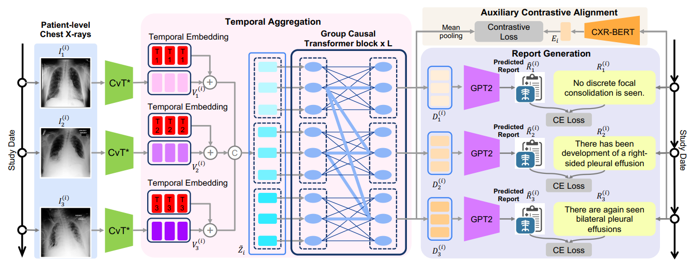
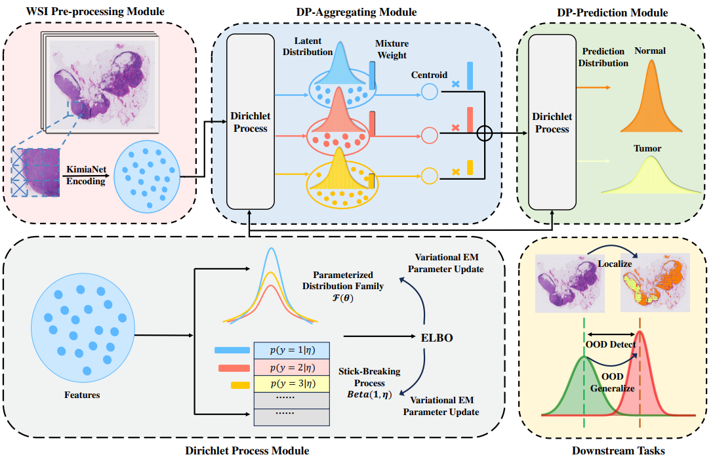
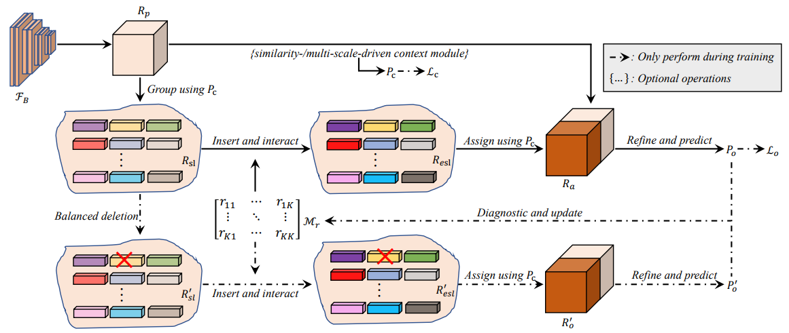
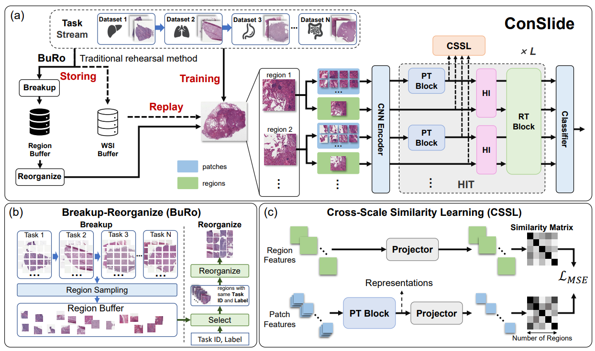
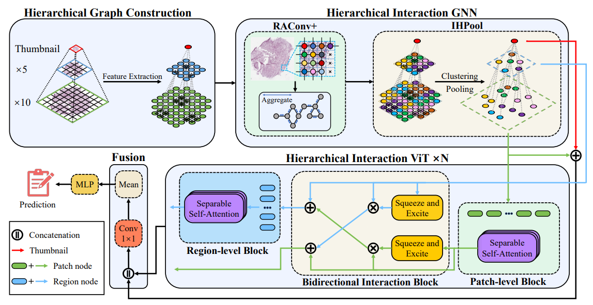
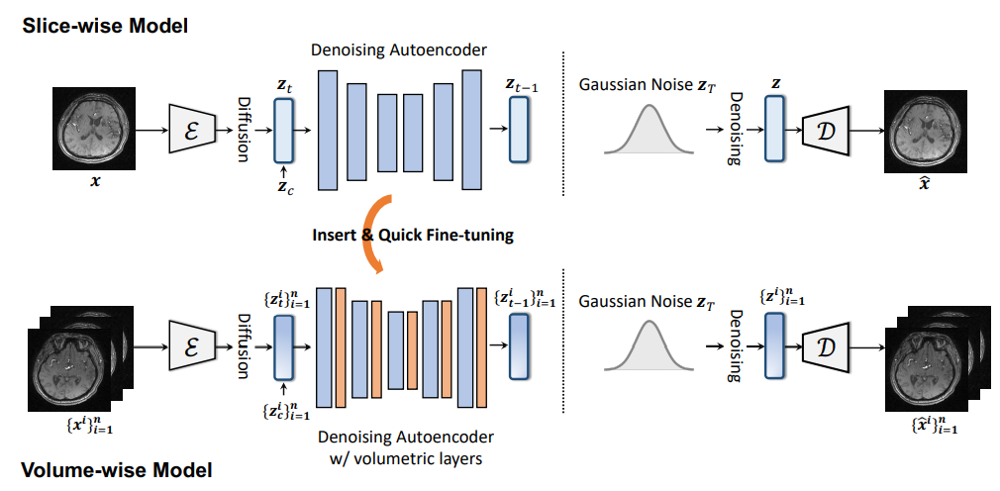
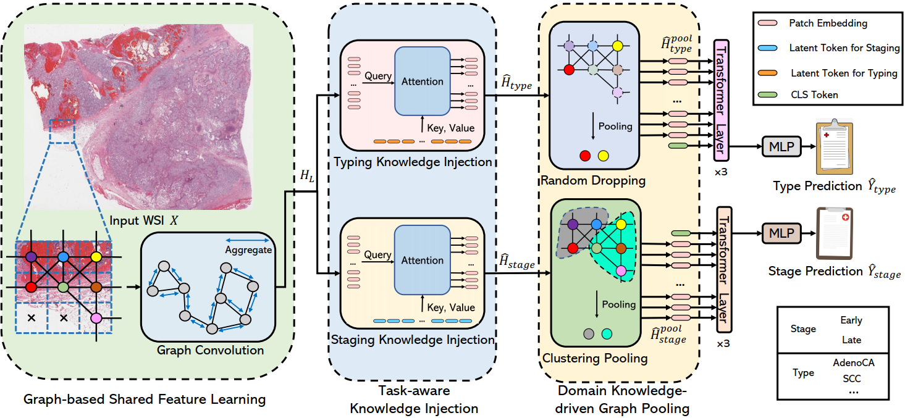
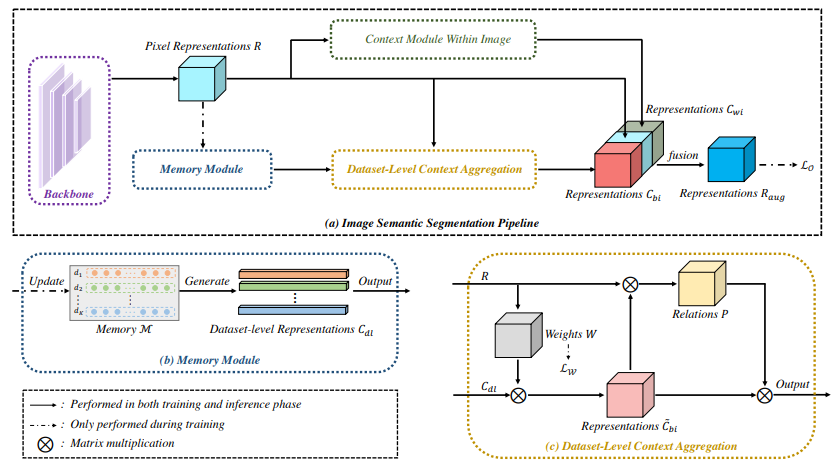

2024

HERGen: Elevating Radiology Report Generation with Longitudinal Data
Fuying Wang, Shenghui Du, Lequan Yu.
European Conference on Computer Vision (ECCV), 2024.

cDP-MIL: Robust Multiple Instance Learning via Cascaded Dirichlet Process
Yihang Chen, Tsai Hor Chan, Guosheng Yin, Yuming Jiang, Lequan Yu.
European Conference on Computer Vision (ECCV), 2024.

Multi-task Heterogeneous Graph Learning on Electronic Health Records
Tsai Hor Chan, Guosheng Yin, Kyongtae Bae, Lequan Yu.
Neural Networks, 2024.
2023

Adaptive Uncertainty Estimation via High-Dimensional Testing on Latent Representations
Tsai Hor Chan, Kin Wai Lau, Jiajun Shen, Guosheng Yin, Lequan Yu.
Conference on Neural Information Processing Systems (NeurIPS), 2023.

IDRNet: Intervention-Driven Relation Network for Semantic Segmentation
Zhenchao Jin, Xiaowei Hu, Lingting Zhu, Luchuan Song, Li Yuan, Lequan Yu.
Conference on Neural Information Processing Systems (NeurIPS), 2023.

ConSlide: Asynchronous Hierarchical Interaction Transformer with Breakup-Reorganize Rehearsal for Continual Whole Slide Image Analysis
Yanyan Huang, Weiqin Zhao, Shujun Wang, Yu Fu, Yuming Jiang, Lequan Yu.
International Conference on Computer Vision (ICCV), 2023.

HIGT: Hierarchical Interaction Graph-Transformer for Whole Slide Image Analysis
Ziyu Guo, Weiqin Zhao, Shujun Wang, Lequan Yu.
Medical Image Computing and Computer Assisted Intervention (MICCAI), 2023.

Make-A-Volume: Leveraging Latent Diffusion Models for Cross-Modality 3D Brain MRI Synthesis
Lingting Zhu, Zeyue Xue, Zhenchao Jin, Xian Liu, Jingzhen He, Ziwei Liu, Lequan Yu.
Medical Image Computing and Computer Assisted Intervention (MICCAI), 2023.
Transformer-based Multimodal Fusion for Survival Prediction by Integrating Whole Slide Images, Clinical, and Genomic Data
Yihang Chen, Weiqin Zhao, Lequan Yu.
IEEE International Symposium on Biomedical Imaging (ISBI), 2023.

Histopathology Whole Slide Image Analysis with Heterogeneous Graph Representation Learning
Tsai Hor Chan, Fernando Julio Cendra, Lan Ma, Guosheng Yin, Lequan Yu.
IEEE/CVF Conference on Computer Vision and Pattern Recognition (CVPR), 2023.

Taming Diffusion Models for Audio-Driven Co-Speech Gesture Generation
Lingting Zhu, Xian Liu, Xuanyu Liu, Rui Qian, Ziwei Liu, Lequan Yu.
IEEE/CVF Conference on Computer Vision and Pattern Recognition (CVPR), 2023.

MulGT: Multi-task Graph-Transformer with Task-aware Knowledge Injection and Domain Knowledge-driven Pooling for Whole Slide Image Analysis
Weiqin Zhao, Shujun Wang, Maximus Yeung, Tianye Niu, Lequan Yu.
AAAI Conference on Artificial Intelligence (AAAI), 2023.
2022

Multi-Granularity Cross-modal Alignment for Generalized Medical Visual Representation Learning
Fuying Wang, Yuyin Zhou, Shujun Wang, Varut Vardhanabhuti, Lequan Yu.
Conference on Neural Information Processing Systems (NeurIPS), 2022.

MCIBI++: Soft Mining Contextual Information Beyond Image for Semantic Segmentation
Zhenchao Jin, Dongdong Yu, Zehuan Yuan, Lequan Yu.
IEEE Transactions on Pattern Analysis and Machine Intelligence (TPAMI), 2022.